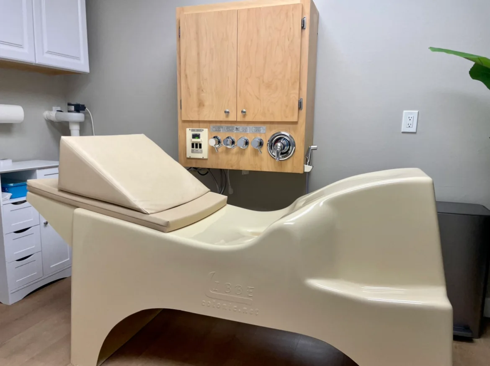
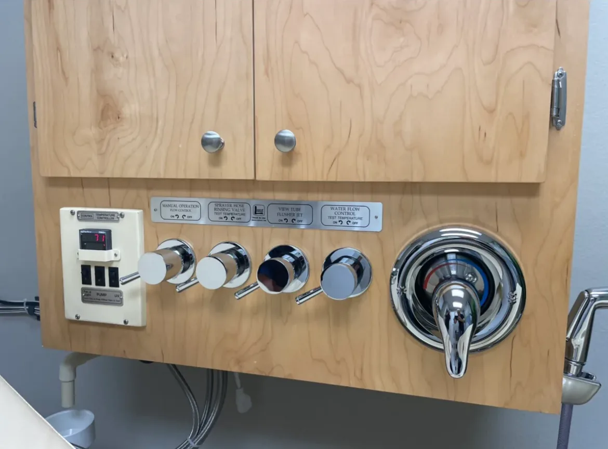

Purification
Gentle cleansing with purified, temperature-controlled water to support healthy digestive function.
Restorative Hydrotherapy · South Pasadena
Gentle, open-system colon hydrotherapy with certified hydrotherapist Nicole Ayers, in a private, serene sanctuary designed around your comfort.
Our Philosophy
“Healing is not just about alleviating symptoms, but about returning the body to its natural state of flow and vitality.”
Welcome to iasi, a sanctuary dedicated to digestive health and holistic wellness. Under the expert care of Nicole Ayers, we provide a safe, discreet, and serene environment for colon hydrotherapy.
Gentle cleansing with purified, temperature-controlled water to support healthy digestive function.
Supporting your body’s innate ability to find its natural rhythm and rebalance itself.
Personalized, respectful care that leaves you feeling informed, supported, and refreshed.
Meet Your Hydrotherapist
Doctor of Homeopathy · Certified Colon Hydrotherapist
Born and raised in the San Gabriel Valley, Nicole found her calling in natural healing, first as a Doctor of Homeopathy and now as a Colon Hydrotherapist. Her new wellness center is now open in the City of South Pasadena.
After graduating from the University of Southern California in 2010, Nicole focused on learning about natural remedies in the field of holistic care. After journeying through conventional paths of natural remedies, she discovered her passion for Homeopathy.
In 2020, Nicole enrolled at the Los Angeles School of Homeopathy in Culver City. After receiving her diploma in 2023, her focus turned to providing natural healing by way of classical Homeopathy. That journey led her to pursue certification in Colon Hydrotherapy and her association with the International Association for Colon Hydrotherapy (I-ACT).
Nicole’s passion lies in helping others become the healthiest version of themselves. With diligence and dedication, she strives to cultivate the wellness of every client.
Her Greek roots have led her to explore Greece throughout her adult life, a journey that has deepened her love and admiration for her family’s heritage. At home, Nicole enjoys cooking, reading, baking, riding her bike, practicing yoga, and being outdoors. Her greatest joy comes from seeing those around her thriving in ultimate health, living each day to its fullest with joy and happiness.
Our Mission
“At iasi, my mission as your certified colon hydrotherapist through the International Association for Colon Hydrotherapy (I-ACT) is to provide safe, gentle, and professional colon hydrotherapy services that support digestive health and overall wellness.”
I am committed to creating a comfortable, respectful environment where clients feel informed, supported, and empowered in the journey toward better health, and to ensuring each client receives personalized care.
Nicole Ayers
The Equipment
Gentle by design, and built for your safety, comfort, and dignity.


The LIBBE open system is a safe, gentle, gravity-fed method of cleansing the large intestine. This FDA-registered system uses only purified water, passed through an ultraviolet filter and held at a comfortable temperature automatically. You relax in a reclining position while water flows gently into the colon through a small, pencil-thin rectal tube that is single-use and disposable. Waste is released naturally through a drain with odorless venting, so there is no odor, mess, or embarrassment. The gentle flow is well tolerated by most people, and while every session is monitored by a certified colon hydrotherapist, you remain in control at all times.
A gentle, natural flow that most people tolerate well.
Ultraviolet filtration for clean, purified water.
Water is kept at a steady, comfortable warmth.
A discreet, comfortable, dignified experience.
Every rectal tube is disposable, used once only.
Designed from the ground up for safety and comfort.
Your Session
From your first call to the moment you leave, every step is calm, private, and unhurried.
Sessions are reserved by appointment only. Call Nicole to ask questions and find a time that suits you.
A tranquil treatment room with private en-suite facilities, prepared just for you.
Recline comfortably on the LIBBE system as purified, warm water flows gently. Nicole monitors your session, and you stay in control.
Take a quiet moment for yourself before returning to your day, feeling lighter and cared for.
The Sanctuary
A tranquil environment thoughtfully curated for your absolute comfort and privacy. Our treatment suite features private en-suite facilities, premium specialized equipment, and a calming atmosphere inspired by nature’s elements.
Reserve Your VisitQuestions, Answered
Still curious? Nicole is happy to talk you through anything, just call (626) 314-1427.
The LIBBE open system is FDA-registered and designed for safety and comfort. Only purified, temperature-controlled water is used, all rectal tubes are single-use and disposable, and every session is monitored by a certified colon hydrotherapist.
The gentle, gravity-fed flow is well tolerated by most people. With the open system, waste is released naturally through a drain with odorless venting, so there is no odor, mess, or embarrassment. You relax in a comfortable, reclining position in a private suite.
Yes. Nicole monitors your session throughout, but you remain in control at all times.
Nicole Ayers, a Doctor of Homeopathy and colon hydrotherapist certified through the International Association for Colon Hydrotherapy (I-ACT). Every session is personal and one-on-one.
Wellness sessions are reserved by appointment only. Call (626) 314-1427 during wellness center hours: Monday to Friday, 9:00 AM to 7:00 PM, and Saturday, 10:00 AM to 4:00 PM.
We encourage all clients to consult their physician or healthcare provider regarding any medical concerns before beginning colon hydrotherapy.
Begin Your Journey
Wellness sessions are reserved by appointment only, so every client receives unhurried, private, personalized care.
Certified Colon Hydrotherapist
(626) 314-1427 Call to Book 1941 Huntington Dr. Suite EColon hydrotherapy is intended to support general wellness and digestive health. Our services do not diagnose, treat, cure, or prevent any disease. We encourage all clients to consult their physician or healthcare provider regarding any medical concerns.